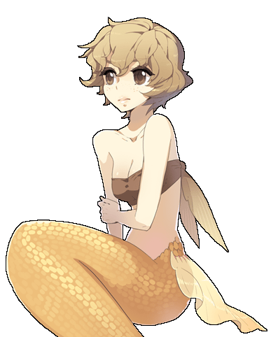
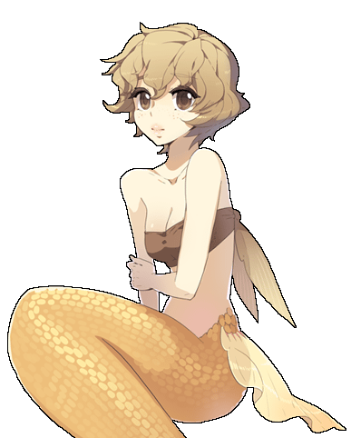
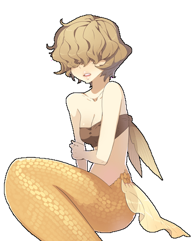
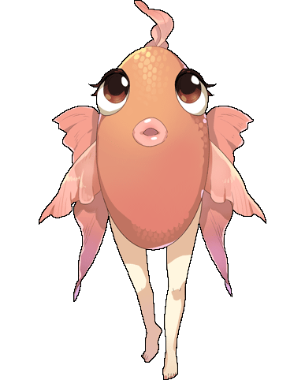
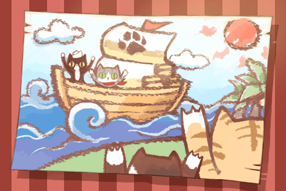
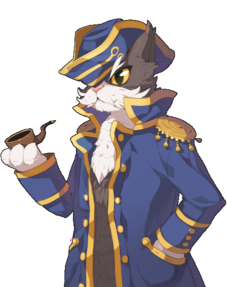
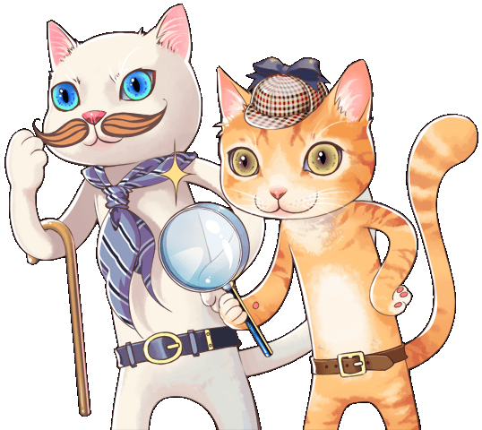

画像にリンクがはってあるものは、クリックすると別窓で大きめサイズが表示されます。
jRO2012年3月27日 マラン島＆海底神殿調査団
|  |  |
|  |
| neira03.bmp |
|  |
| neira04.bmp |
| sedora_tere.bmp |
| mal_octo_fes.bmp |
|  |

|
スターキャンディ |
|  | |
トーマス村長 | トーマス村長 |
トーマス村長 | トーマス村長 |
|  |

|
左：名探偵の友ニャンスン 右：名探偵ホムニャ | 左：名探偵の友ニャンスン 右：名探偵ホムニャ |
back
(c) Gravity Co., Ltd. & Lee MyoungJin(studio DTDS). All rights reserved.
(c) GungHo Online Entertainment, Inc. All Rights Reserved.
当コンテンツの再利用（再転載・配布など）は、禁止しています。